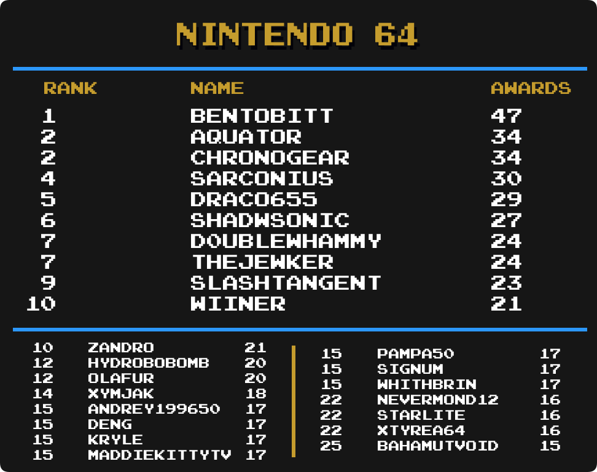

Top Masteries
 By
MrOwnership
By
MrOwnership
Contents
- Intro
- Current Champions
- Notable Milestones
-
Category Rankings
- Total Awards
- Total Awards (Excluding Hacks)
- Events
- Amstrad CPC
- Apple II
- Arcade
- Arduboy
- Atari 2600
- Dreamcast
- Fairchild Channel F
- Game Boy
- Game Boy Advance
- Game Boy Color
- Game Gear
- Hack Champ
- Homebrew Champ
- Master System
- Mega Drive
- Mega Duck
- Nintendo 64
- NES
- Nintendo DS
- PC-8000/8800
- PC Engine
- PlayStation
- PlayStation 2
- PlayStation Portable
- Pokémon Mini
- Sega Saturn
- Sega CD
- SNES
- Virtual Boy
- WASM-4
- Watara Supervision
Intro
We are going to take a look at another metric for greatness, Mastery Awards. Mastery awards are given to users when they complete every achievement for a given set in hardcore mode. Users wear mastery awards as a badge of honor on their profile page representing all the hard work they put into truly becoming a master of the game.
Below we will take a look at which users rank among the best with the most mastery awards in several categories well as notable updates from the previous month to each individual category. Check to see how you rank among the rest of the community members.
Special thanks to  Nydaxn for creating the ranking image templates.
Nydaxn for creating the ranking image templates.
* Data as of November 1st 2022.
Current Champions
|
|
|
Mastery Awards | |
|---|---|---|---|
| Total Awards |  guineu guineu |
966 | |
| 3DO Interactive Multiplayer |  Vyach59 Vyach59 |
12 | |
| Amstrad CPC |  roukanumachi roukanumachi |
15 | |
| Apple II | guineu |
12 | |
| Arcade |  dcmpinguin dcmpinguin |
74 | |
| Arduboy |  HolyShinx HolyShinx |
35 | |
| Atari 2600 |  PMniac PMniac |
96 | |
| Atari 7800 | PMniac |
11 | |
| Atari Jaguar | PMniac |
7 | |
| Atari Lynx |
guineu &  Jungon Jungon
|
5 | |
| ColecoVision | PMniac |
10 | |
| Dreamcast |  SteveHarvey SteveHarvey |
19 | |
| Events |  televandalist televandalist |
28 | |
| Fairchild Channel F |
 alphacrust, guineu & alphacrust, guineu &  Stomper Stomper
|
19 | |
| Game Boy |  Shootzy Shootzy |
125 | |
| Game Boy Advance |  bonecrusher1022 bonecrusher1022 |
115 | |
| Game Boy Color |  pitapocket17 pitapocket17 |
58 | |
| Game Gear | Nydaxn |
64 | |
| Hack Champ | HolyShinx |
204 | |
| Homebrew Champ |  AuburnRDM AuburnRDM |
171 | |
| Intellivision | Jungon |
14 | |
| Magnavox Odyssey 2 | Jungon |
8 | |
| Master System | Jungon |
78 | |
| Mega Drive |  DUT DUT |
120 | |
| Mega Duck |  AzuchiAkeshi AzuchiAkeshi |
12 | |
| MSX | guineu |
10 | |
| Nintendo 64 |  BenTobitt BenTobitt |
47 | |
| Neo Geo Pocket |  MelodyAsh MelodyAsh |
8 | |
| NES |  SanMarino SanMarino |
244 | |
| Nintendo DS |  Olafur Olafur |
72 | |
| PC Engine |  Infernum Infernum |
38 | |
| PC-8000/8800 | guineu |
11 | |
| PC-FX |
 Annonith & Annonith &  YahwehTzVaoth YahwehTzVaoth
|
4 | |
| PlayStation |  FBiDev FBiDev |
83 | |
| PlayStation 2 |  donutweegee donutweegee |
17 | |
| PlayStation Portable |  minibt minibt |
36 | |
| Pokémon Mini |  Sylrifaide Sylrifaide |
32 | |
| Sega 32X |  Fara0 Fara0 |
4 | |
| Sega Saturn |  Orph Orph |
15 | |
| Sega CD | Orph |
9 | |
| SG-1000 |
PMniac & Jungon
|
9 | |
| SNES |  danibodom danibodom |
205 | |
| Vectrex | Jungon |
9 | |
| Virtual Boy |
 Grahamtams & Jungon Grahamtams & Jungon
|
11 | |
| WASM-4 | AuburnRDM |
30 | |
| Watara Supervision |  Sarconius Sarconius |
42 | |
| WonderSwan |
Annonith, AuburnRDM & |
3 |
Notable Milestones
800 Mastery Awards
 Bendyhuman Bendyhuman |
400 Mastery Awards
| Olafur |
200 Mastery Awards
 Pudpod Pudpod |
100 Mastery Awards
 Whithbrin Whithbrin |
 vaanxbahn vaanxbahn |
 TheJohanx TheJohanx |
 s0uth s0uth |
 Rufio Rufio |
 rev rev |
 Nabas6545 Nabas6545 |
 LeakyComet LeakyComet |
 JackSamEss JackSamEss |
 HotCoffee HotCoffee |
 fe3001 fe3001 |
 DavidYTBR2 DavidYTBR2 |
 bman7 bman7 |
 AllKindsOfJames AllKindsOfJames |
 AirRazorX AirRazorX |
Category Rankings
Total Awards
-
guineu remains in 1st with 966 total mastery awards.
-
 ShadwSonic has moved up 1 spot and is in 11th place.
ShadwSonic has moved up 1 spot and is in 11th place. -
 MaddieKittyTV has moved up 1 spot and is in 17th place.
MaddieKittyTV has moved up 1 spot and is in 17th place. -
Olafur has moved up 2 spots and is in 18th place.
-
 BOP95 has moved up 1 spot and is tied for 21th place.
BOP95 has moved up 1 spot and is tied for 21th place. -
 Lonoke31 has made it into the top 25 and is in 23th place.
Lonoke31 has made it into the top 25 and is in 23th place.
Total Awards (Excluding Hacks)

-
guineu remains in 1st with 944 total mastery awards.
-
AuburnRDM has moved up 1 spot and is in 4th place.
-
DUT has moved up 1 spot and is tied for 13th place.
-
BOP95 has moved up 2 spots and is tied for 15th place.
-
Olafur has moved up 1 spot and is in 18th place.
-
 Thoreau has moved up 3 spots and is in 19th place.
Thoreau has moved up 3 spots and is in 19th place. -
MaddieKittyTV has moved up 1 spot and is in 20th place.
-
Lonoke31 has moved up 2 spots and is tied for 22th place.
Events
-
televandalist remains in 1st with 28 total mastery awards.
-
 SlashTangent has moved up 1 spot and is tied for 3 place.
SlashTangent has moved up 1 spot and is tied for 3 place. -
AuburnRDM has made it into the top 25 and is in a 3-way tie for 25th place.
Amstrad CPC
-
roukanumachi remains in 1st with 15 total mastery awards.
-
 alundra82 has moved up 2 spots and is in a 3-way tie for 3rd place.
alundra82 has moved up 2 spots and is in a 3-way tie for 3rd place. -
 AgentYous has made it into the top 25 and is in a 38-way tie for 20th place.
AgentYous has made it into the top 25 and is in a 38-way tie for 20th place.
Apple II

 xnaivx
xnaivxArcade
-
 dcmpinguim remains in 1st with 74 total mastery awards.
dcmpinguim remains in 1st with 74 total mastery awards. -
 NeowaveBR has made it into the top 25 and is in 14th place.
NeowaveBR has made it into the top 25 and is in 14th place.
Arduboy
-
HolyShinx remains in 1st with 35 total mastery awards.
-
LeakyComet has moved up 11 spots and is tied for 4th place.
-
Thoreau has made it into the top 25 and is tied for 8th place.
-
 Maximdraco &
Maximdraco &  Xinorok have made it into the top 25 and are in a 5-way tie for 18th place.
Xinorok have made it into the top 25 and are in a 5-way tie for 18th place.
Atari 2600
-
PMniac remains in 1st with 96 total mastery awards.
-
 VectorPrime40 has moved up 7 spots and is tied for 14th place.
VectorPrime40 has moved up 7 spots and is tied for 14th place.
Dreamcast

-
SteveHarvey remains in 1st with 19 total mastery awards.
-
 Amir96lx &
Amir96lx &  Kiko have made it into the top 25 and are in a 15-way tie for 18th place.
Kiko have made it into the top 25 and are in a 15-way tie for 18th place.
Fairchild Channel F
-
Stomper has moved up 1 spots and is in a 3-way tie for 1st place with alphacrust & guineu.
-
 evanation &
evanation &  ValueOfTime0 have made it into the top 25 and are in a 3-way tie for 12th place.
ValueOfTime0 have made it into the top 25 and are in a 3-way tie for 12th place. -
 BlotchJBMR & YahwehTzVaoth have made it into the top 25 and are in a 5-way tie for 17th place.
BlotchJBMR & YahwehTzVaoth have made it into the top 25 and are in a 5-way tie for 17th place. -
 Lakge has made it into the top 25 and is in a 5-way tie for 22nd place.
Lakge has made it into the top 25 and is in a 5-way tie for 22nd place.
Game Boy
-
Shootzy remains in 1st with 125 total mastery awards.
-
 323GONZALEZ1990 has moved up 2 spots and is in a 3-way tie for 19th place.
323GONZALEZ1990 has moved up 2 spots and is in a 3-way tie for 19th place.
Game Boy Advance
-
bonecrusher1022 remains in 1st with 115 total mastery awards.
-
guineu has moved up 2 spots and is in a 3-way tie for 15th place.
-
 Andrevus has moved up 1 spot and is tied for 18th place.
Andrevus has moved up 1 spot and is tied for 18th place.
Game Boy Color
-
pitapocket17 remains in 1st with 58 total mastery awards.
-
 valeforge has made it into the top 25 and is in 8th place.
valeforge has made it into the top 25 and is in 8th place. -
Lonoke31 has moved up 1 spot and is in a 3-way tie for 10th place.
Game Gear

-
Nydaxn remains in 1st with 64 total mastery awards.
-
 Waishler has moved up 3 spots and is tied for 9th place.
Waishler has moved up 3 spots and is tied for 9th place. -
 nezzen has moved up 3 spots and is in 17th place.
nezzen has moved up 3 spots and is in 17th place. -
 drusiform &
drusiform &  XashTheStampede have made it into the top 25 and are in a 8-way tie for 18th place.
XashTheStampede have made it into the top 25 and are in a 8-way tie for 18th place.
Hack Champ
-
HolyShinx remains in 1st with 204 total mastery awards.
-
 chocolatiel has moved up 3 spots and is tied for 14th place.
chocolatiel has moved up 3 spots and is tied for 14th place. -
 Dartfree has made it into the top 25 and is tied for 19th place.
Dartfree has made it into the top 25 and is tied for 19th place.
Homebrew Champ

-
AuburnRDM remains in 1st with 171 total mastery awards.
-
 NEOMAR has moved up 7 spots and is tied for 10th place.
NEOMAR has moved up 7 spots and is tied for 10th place. -
Lonoke31 has moved up 7 spots and is in 12th place.
-
 PaddyW has moved up 2 spots and is in 21th place.
PaddyW has moved up 2 spots and is in 21th place. -
 FlareEX has made it into the top 25 and is in 22th place.
FlareEX has made it into the top 25 and is in 22th place.
Master System
-
Jungon remains in 1st with 78 total mastery awards.
-
 Ernesto has moved up 2 spots and is in a 3-way tie for 8th place.
Ernesto has moved up 2 spots and is in a 3-way tie for 8th place. -
BOP95 has made it into the top 25 and is in a 7-way tie for 25th place.
Mega Drive

-
DUT remains in 1st with 120 total mastery awards.
-
BOP95 has moved up 2 spots and is in a 3-way tie for 9th place.
-
 TindalosKeeper has made it into the top 25 and is tied for 14th place.
TindalosKeeper has made it into the top 25 and is tied for 14th place.
Mega Duck

-
AzuchiAkeshi,
 Jaeger42, Infernum,
Jaeger42, Infernum,  soltyd &
soltyd &  TheRealBillHicks hold the top 3 spots in Mega Duck’s Top Mastery debut.
TheRealBillHicks hold the top 3 spots in Mega Duck’s Top Mastery debut.
Nintendo 64

-
BenTobitt remains in 1st with 47 total mastery awards.
-
 TheJewker has moved up 1 spot and is tied for 7th place.
TheJewker has moved up 1 spot and is tied for 7th place. -
 zandro has moved up 1 spot and is tied for 10th place.
zandro has moved up 1 spot and is tied for 10th place. -
 HydroBobOmb has moved up 1 spot and is tied for 12th place.
HydroBobOmb has moved up 1 spot and is tied for 12th place.
NES

-
SanMarino remains in 1st with 244 total mastery awards.
-
 mx01 has moved up 1 spot and is in 2nd place.
mx01 has moved up 1 spot and is in 2nd place. -
guineu has moved up 3 spots and is in 19th place.
-
Infernum has made it into the top 25 and is in 25th place.
Nintendo DS
-
Olafur remains in 1st with 72 total mastery awards.
-
Bendyhuman has moved up 1 spot and is tied for 2nd place.
-
guineu has moved up 5 spots and is in a 6-way tie for 19th place.
PC-8000/8800

-
guineu remains in 1st with 11 total mastery awards.
-
 CraneD has made it into the top 25 and is in a 15-way tie for 16th place.
CraneD has made it into the top 25 and is in a 15-way tie for 16th place.
PC Engine

-
Infernum remains in 1st with 38 total mastery awards.
-
Jungon has moved up 3 spots and is in a 4-way tie for 13th place.
-
 WanderingHeiho has made it into the top 25 and is in a 4-way tie for 20th place.
WanderingHeiho has made it into the top 25 and is in a 4-way tie for 20th place. -
AuburnRDM has made it into the top 25 and is in a 7-way tie for 24th place.
PlayStation
-
FBiDev remains in 1st with 83 total mastery awards.
-
 foxsevent has moved up 3 spots and is in a 3-way tie for 9th place.
foxsevent has moved up 3 spots and is in a 3-way tie for 9th place. -
 DEATHDragon & Sylrifaide have moved up 1 spot and are in a 3-way tie for 15th place.
DEATHDragon & Sylrifaide have moved up 1 spot and are in a 3-way tie for 15th place.
PlayStation 2

-
donutweegee,
 Matirion & Amir96lx hold the top 3 spots in PlayStation 2’s Top Mastery debut.
Matirion & Amir96lx hold the top 3 spots in PlayStation 2’s Top Mastery debut.
PlayStation Portable

-
minibt remains in 1st with 36 total mastery awards.
-
 Blazekickn has moved up 4 spots and is tied for 14th place.
Blazekickn has moved up 4 spots and is tied for 14th place. -
 Caelum has made it into the top 25 and is in a 5-way tie for 21th place.
Caelum has made it into the top 25 and is in a 5-way tie for 21th place.
Pokémon Mini
-
Sylrifaide remians in 1st having mastered all 32 sets.
-
guineu has moved up 2 spots and is tied for 3rd place.
-
Blazekickn & Xinorok have made it into the top 25 and are in a 3-way tie for 14th place.
-
FlareEX has made it into the top 25 and is in a 5-way tie for 18th place.
-
bman7 & bonecrusher1022 have made it into the top 25 and are in a 9-way tie for 23rd place.
Sega Saturn

-
Orph remains in 1st with 15 total mastery awards.
-
 Tayadaoc has moved up 8 spots and is in a 4-way tie for 12th place.
Tayadaoc has moved up 8 spots and is in a 4-way tie for 12th place. -
guineu has made it into the top 25 and is in a 11-way tie for 16th place.
Sega CD
-
Orph remains in 1st with 9 total mastery awards.
-
 Drakub has moved up 3 spots and is in a 3-way tie for 2nd place.
Drakub has moved up 3 spots and is in a 3-way tie for 2nd place. -
WanderingHeiho has moved up 2 spots and is in a 3-way tie for 5th place.
-
 Cabrunco & drusiform have made it into the top 25 and are in a 39-way tie for 18th place.
Cabrunco & drusiform have made it into the top 25 and are in a 39-way tie for 18th place.
SNES
-
danibodom remains in 1st with 205 total mastery awards.
-
guineu has moved up 2 spots and is tied for 12th place.
-
 FabricioPrie has moved up 1 spot and is tied for 16th place.
FabricioPrie has moved up 1 spot and is tied for 16th place.
Virtual Boy

-
guineu has moved up 1 spot and is in a 3-way tie for 1st place with Grahamtams & Jungon.
-
Bendyhuman has moved up 2 spots and is tied for 4th place.
-
 angelusmortalis &
angelusmortalis &  AptGaming have made it into the top 25 and are in a 33-way tie for 19th place.
AptGaming have made it into the top 25 and are in a 33-way tie for 19th place.
WASM-4

-
AuburnRDM remains in 1st with 30 total mastery awards.
-
alphacrust has made it into the top 25 and is in 2nd place.
-
 Xotoco has moved up 7 spots and is in a 3-way tie for 13th place.
Xotoco has moved up 7 spots and is in a 3-way tie for 13th place. -
Blazekickn has moved up 7 spots and is in a 5-way tie for 16th place.
-
HolyShinx has made it into the top 25 and is in a 5-way tie for 16th place.
Watara Supervision
-
Sarconius remains in 1st with 42 total mastery awards.
-
 CuddleBugs has made it into the top 25 and is in 14th place.
CuddleBugs has made it into the top 25 and is in 14th place.